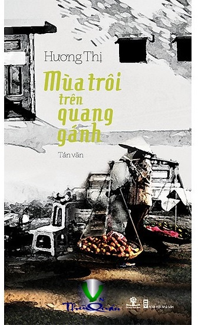

« Back
Mùa Trôi Trên Quang Gánh
By Hương Thị

1. RÉT NÀNG BÂN
2. NGỠ NGÀNG THÁNG TƯ
3. NHỮNG BUỔI SÁNG MÙA HÈ
4. NHỮNG BUỔI TRƯA MÙA HÈ
5. NHỮNG BUỔI TỐI MÙA HÈ
6. VỀ NGANG MÙA GẶT
7. MÙI RƠM RẠ
8. NHỚ MÙA XƯA NƯỚC NGẬP
9. KÝ ỨC... KEM
10. THƯƠNG QUÁ BÁNH KHOAI KHÔ
11. MÙA TRÔI TRÊN QUANG GÁNH
12. GÁNH HÀNG HOA
13. TIẾNG RAO TRONG LÒNG PHỐ
14. BÁNH ĐA QUÊ
15. XÔI SẮN ĐẦU ĐÔNG
16. MÙA ĐÔNG BÚN HẾN
17. NHỮNG MÙA ĐÔNG ĐI QUA
18. MÂY CHIỀU THỊ TRẤN
19. VƯỜN XƯA
20. TẾT XƯA THƠ BÉ
21. CỒN CÀO NHỚ NHỮNG TẾT XƯA
22. TẾT BẮT ĐẦU TỪ BẾP